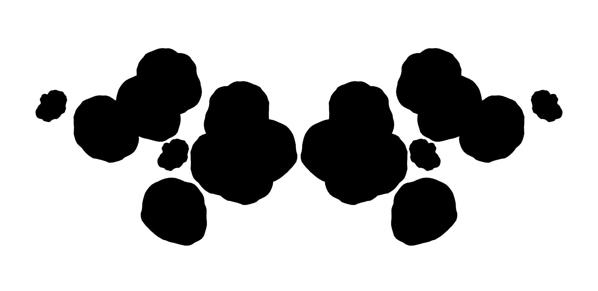
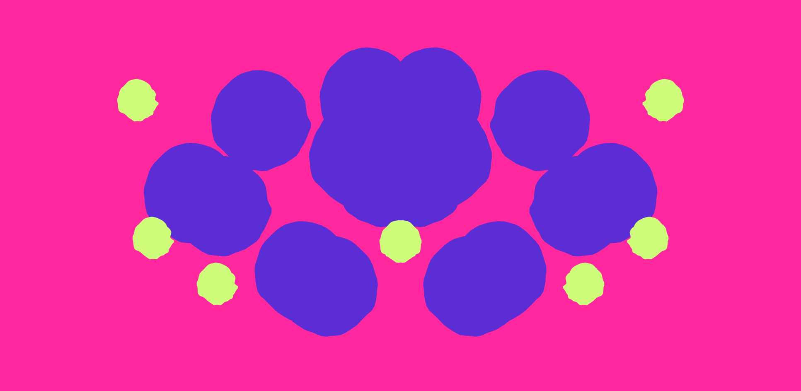
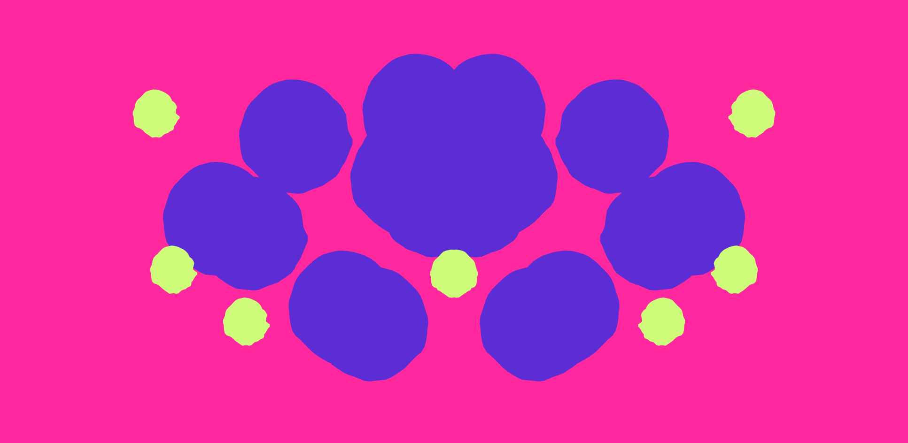
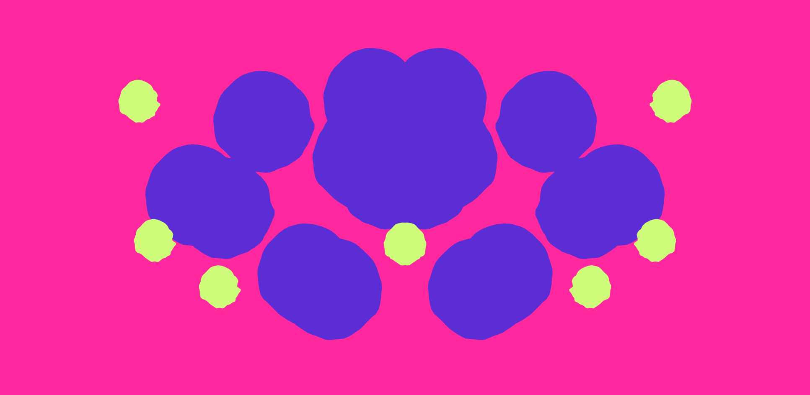

Pattern Generator page
Rorschach Creator
This generator was made as an exploration of the visual potential for the inkblot portion of the Rorschach test. The patterns engage with the element of symmetry and form, as well as color. The generator creates a randomized number of shapes, which are mirrored on both halves of the canvas.

 

